1.10 Alkenes
Structure, geometric isomerism, addition reactions and polymers
1.10 Alkenes
本页对应 1.10 Alkenes.pdf.pdf，整理 alkene structure、sigma / pi bonding、geometric isomerism、electrophilic addition、oxidation、bromine-water test、addition polymerisation 和 polymer disposal。专业词汇保留 English，重点掌握 alkene 的高 electron density 和 C=C addition chemistry。
Learning objectives
学完本页后，你应该能够：
- describe the structure and general formula of acyclic alkenes；
- explain sigma and pi bonds and restricted rotation around
C=C； - identify cis/trans and E/Z geometric isomers using priority rules；
- write equations and conditions for electrophilic addition reactions；
- explain the bromine-water saturation test and oxidation with alkaline
KMnO₄； - draw addition-polymerisation equations and identify repeating units；
- evaluate disposal methods for addition polymers。
1.10.1 Alkenes - Introduction
Definition and general formula
Alkenes are unsaturated hydrocarbons containing at least one carbon-carbon double bond。For an open-chain alkene with one C=C bond：
\[ \ce{C_nH_{2n}} \]
The first members are ethene、propene、but-1-ene、pent-1-ene and hex-1-ene。
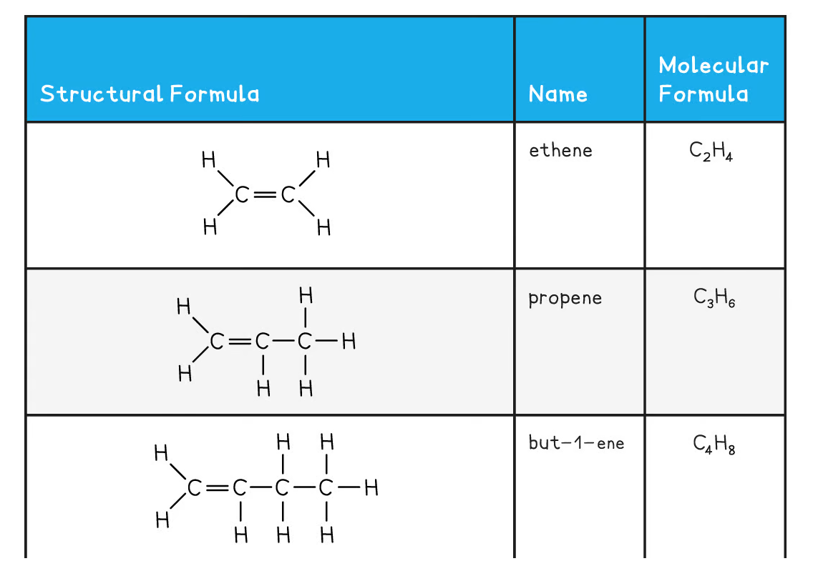
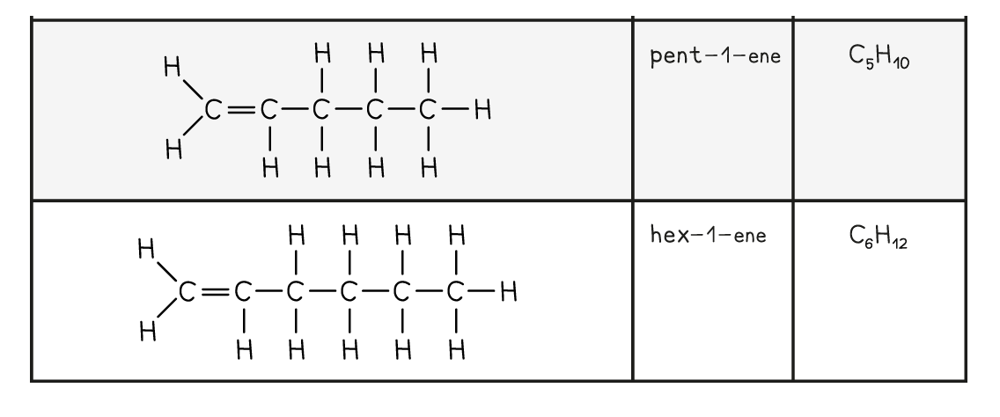
Alkenes are more reactive than alkanes because the double bond contains a high electron-density π bond that can attract electrophiles。
Sigma and pi bonds
A carbon-carbon double bond contains：
- one
σbond formed by end-to-end overlap of orbitals along the internuclear axis； - one
πbond formed by sideways overlap of parallelporbitals。
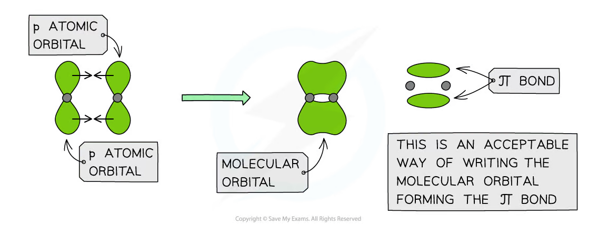
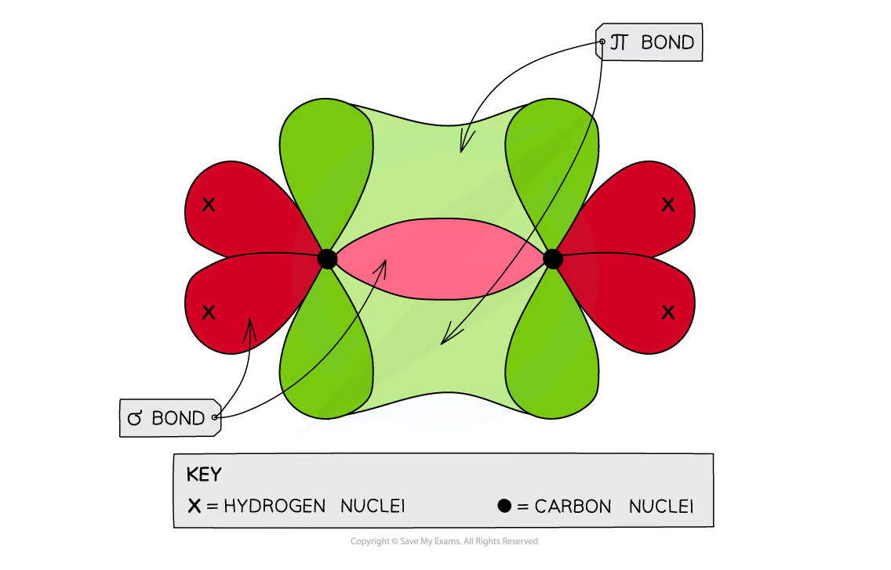
The π bond is above and below the plane of the carbon atoms. Rotation around the C=C bond would break the π bond，so free rotation is not possible。
Nomenclature
Choose the longest carbon chain containing the C=C bond and number from the end that gives the double bond the lowest possible number：
CH₂=CH₂：ethene；CH₂=CHCH₃：propene；CH₂=CHCH₂CH₃：but-1-ene；CH₃CH=CHCH₃：but-2-ene。
The number identifies the first carbon of the double bond，and the suffix is -ene。
1.10.2 Isomers - Geometric
Why geometric isomers exist
Geometric isomerism arises because：
- the
C=Cbond cannot rotate freely； - each carbon atom in the double bond is attached to two groups；
- the groups can be arranged on the same side or opposite sides。
The two groups attached to each carbon must be different for geometric isomerism to occur。Ethene does not have geometric isomers because each carbon has two identical hydrogen atoms。
Cis and trans
- cis：the corresponding groups are on the same side of the double bond；
- trans：the corresponding groups are on opposite sides。
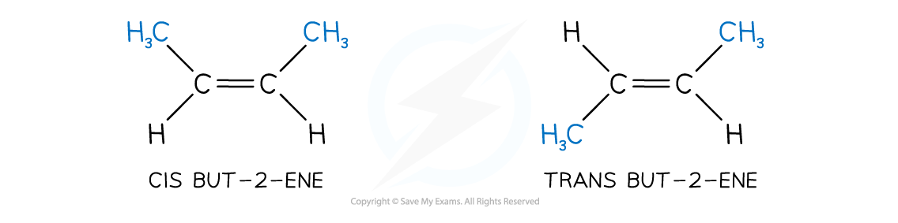
The cis and trans forms are different compounds with different physical properties，such as melting point and boiling point。
E/Z notation
Cis/trans naming is not sufficient when all four groups are different. Use the Cahn-Ingold-Prelog priority rules：
- compare the atoms directly attached to each carbon of the
C=Cbond； - the atom with the higher atomic number has higher priority；
- if the directly attached atoms are the same，compare the next atoms along each group until a difference is found；
Zmeans the higher-priority groups are on the same side；Emeans the higher-priority groups are on opposite sides。
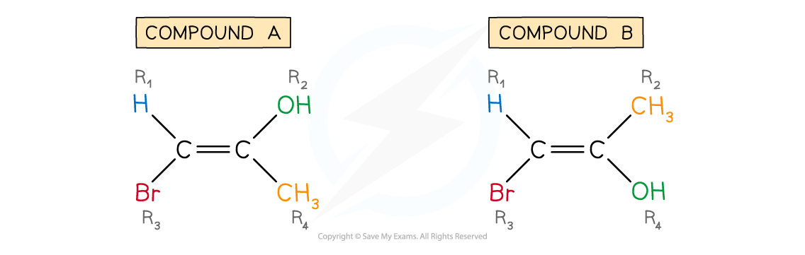
For example，bromo has higher priority than methyl because Br has a higher atomic number than C。Do not decide E/Z from the apparent size of a group；use atomic-number priority。
1.10.3 Reactions of alkenes
Electrophilic addition
The π bond contains electron density that attracts an electrophile，a species that accepts an electron pair。The C=C bond opens and two new sigma bonds form：
\[ \ce{C=C + A-B -> C(A)-C(B)} \]
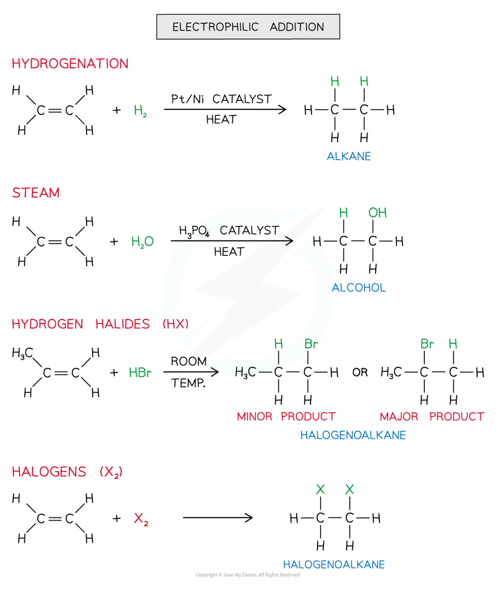
Hydrogenation
Hydrogen adds across the double bond to form an alkane：
\[ \ce{CH2=CH2 + H2 ->[Ni][heat] CH3CH3} \]
This reaction is used in the hardening of vegetable oils. Hydrogenation reduces the number of double bonds and increases saturation。
Hydration with steam
Steam adds across the double bond to form an alcohol：
\[ \ce{CH2=CH2 + H2O ->[H3PO4][heat] CH3CH2OH} \]
Industrial hydration is reversible and uses a phosphoric-acid catalyst at elevated temperature and pressure。
Addition of hydrogen halides
Hydrogen bromide adds to propene to form a mixture in which the major product is 2-bromopropane：
\[ \ce{CH3CH=CH2 + HBr -> CH3CHBrCH3} \]
The minor product is 1-bromopropane。The major product forms through the more stable secondary carbocation intermediate。
Addition of halogens
Bromine and chlorine add across the double bond at room temperature：
\[ \ce{CH2=CH2 + Br2 -> CH2BrCH2Br} \]
The product is 1,2-dibromoethane。
1.10.4 Saturation test
Bromine water is used to distinguish an alkene from an alkane：
- alkene + bromine water at room temperature → orange / brown solution becomes colourless；
- alkane + bromine water in the dark → no reaction and no colour change。
The alkene reacts by addition across C=C，whereas the alkane requires UV light for free-radical substitution。
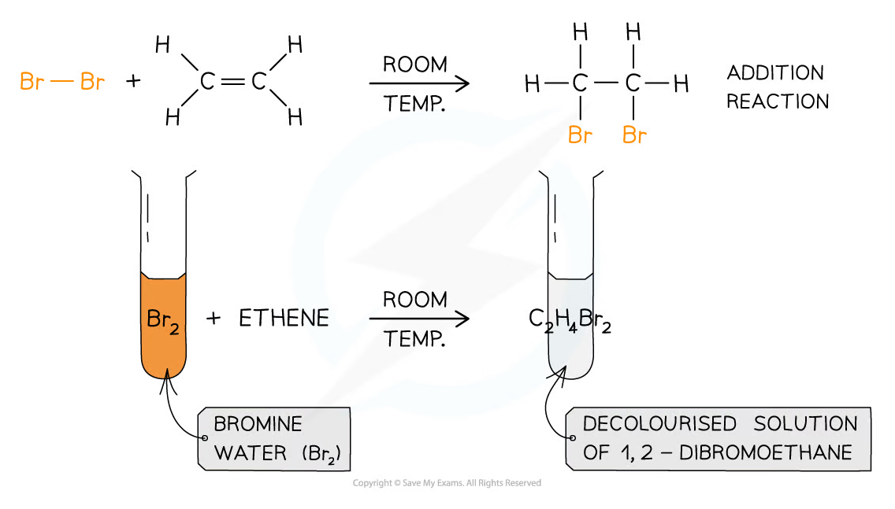
The test is qualitative：it shows the presence of a carbon-carbon multiple bond under these conditions，but it does not identify the exact alkene。
1.10.5 Electrophilic addition - mechanism
Curly-arrow principles
Use curly arrows to show movement of an electron pair：
- the arrow starts at a bond or lone pair；
- the arrow head points to where the electron pair forms a new bond or a lone pair；
- do not start a curly arrow at a positive charge because a positive centre has no electron pair to donate。
Addition of HBr to propene
- The
πbond polarises the H-Br bond and attacks the hydrogen electrophile。 - The H-Br bond breaks heterolytically，and bromide becomes a nucleophile。
- A carbocation intermediate forms。
- Bromide attacks the carbocation to form the haloalkane。
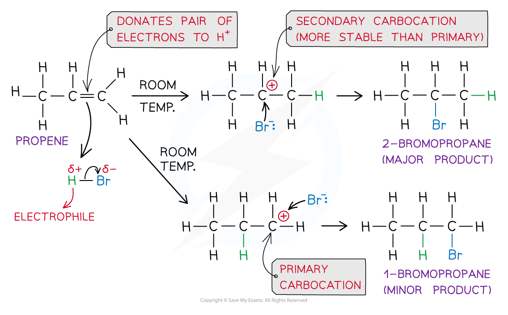
The pathway through the secondary carbocation is favoured because it is more stable than the primary carbocation。This gives 2-bromopropane as the major product。
Addition of bromine
Bromine is polarised by the electron-rich double bond. The alkene attacks the δ+ bromine atom，then the bromide ion attacks the positive intermediate to form a dibromoalkane。
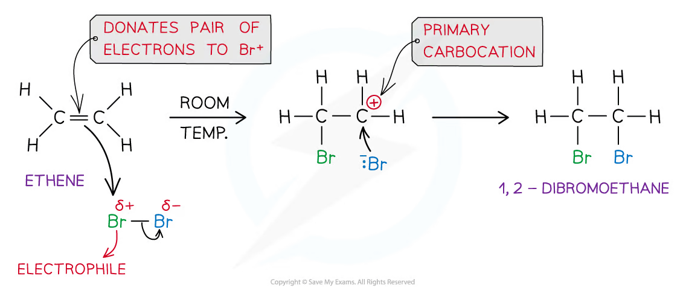
Oxidation with alkaline potassium manganate(VII)
Cold dilute alkaline KMnO₄ oxidises an alkene to a vicinal diol：
\[ \ce{CH2=CH2 + H2O + [O] -> HOCH2CH2OH} \]
The pale-purple solution becomes colourless。This provides another test for a carbon-carbon double bond。
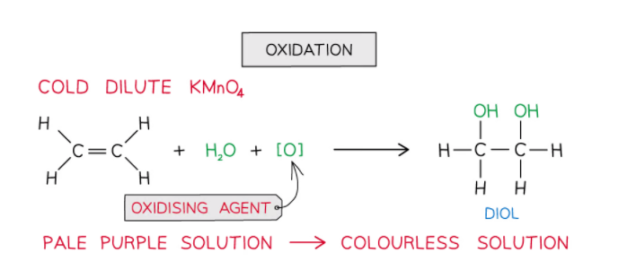
1.10.6 Addition polymerisation
Monomer and repeating unit
Addition polymerisation joins many alkene monomers to form a polymer。The C=C bond opens and becomes a C-C single bond in the polymer backbone：
\[ n\ce{CH2=CH2 -> [-CH2-CH2-]_{n}} \]
The polymer has a very large relative molecular mass and no small molecule is eliminated，so the process is addition polymerisation。
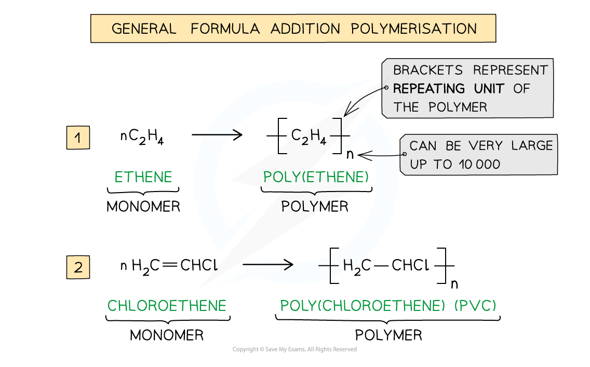
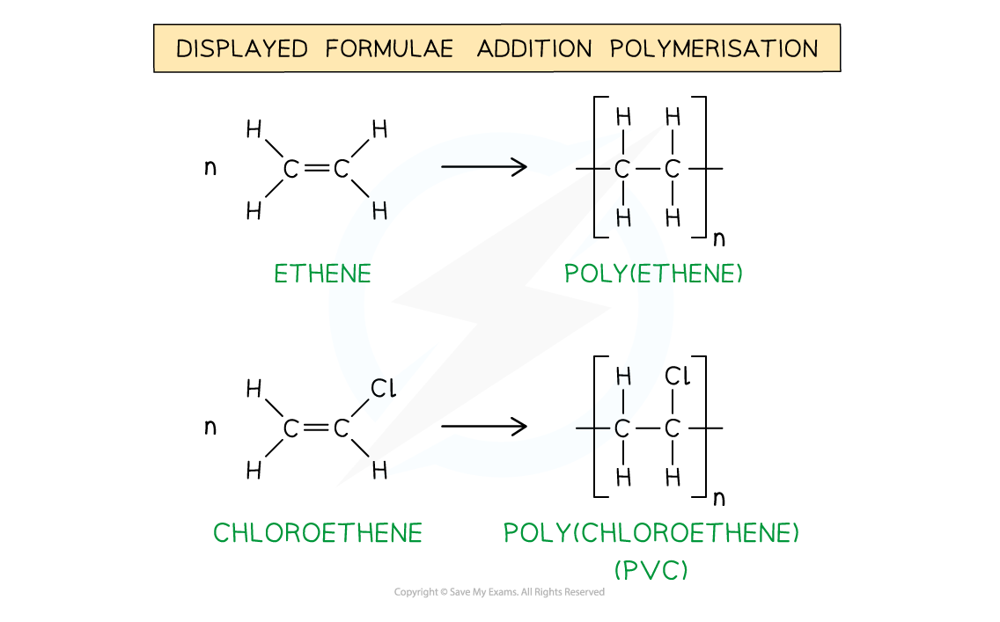
Drawing a repeating unit
To convert a monomer into its repeating unit：
- remove the
C=Cdouble bond and draw aC-Csingle bond； - keep the original substituents attached to the same carbon atoms；
- place the unit in square brackets；
- add a subscript
noutside the brackets。
The repeating unit must contain two carbon atoms for a polymer made from a two-carbon alkene monomer。
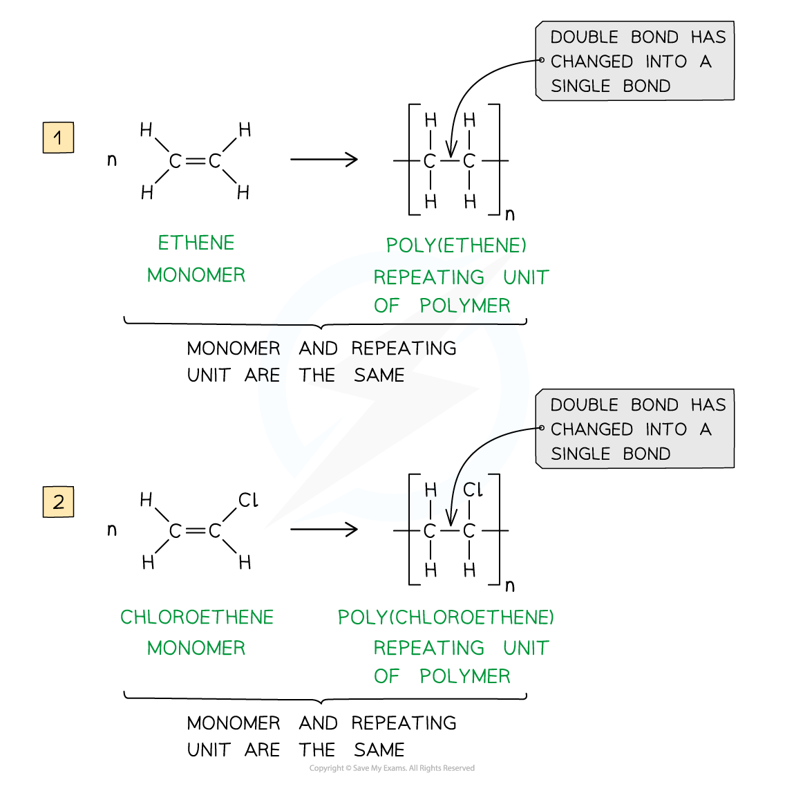
The monomer and repeating unit have the same atoms，but the double bond in the monomer becomes a single bond in the polymer chain。
Common addition polymers
| Monomer | Polymer | Use / feature |
|---|---|---|
| Ethene | Poly(ethene) / polyethene | Packaging and containers |
| Chloroethene | Poly(chloroethene) / PVC | Pipes、cable insulation and window frames |
| Propene | Poly(propene) | Containers and fibres |
| Ethene-1,2-diol | Poly(ethene-1,2-diol) | Contains hydroxyl groups and is more biodegradable than polyethene in some formulations |
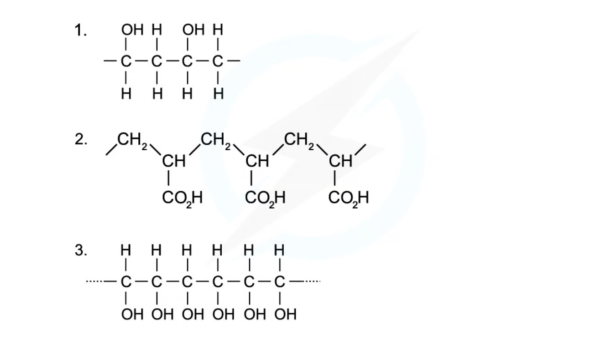
1.10.7 Polymer disposal
Incineration
Incineration reduces the volume of waste and can recover energy。However：
- complete combustion produces carbon dioxide；
- incomplete combustion can produce carbon monoxide and soot；
- halogen-containing polymers such as PVC can release hydrogen chloride and potentially hazardous combustion products；
- incinerators require pollution-control systems。
Landfill
Landfill is simple but addition polymers are often non-biodegradable and persist for a long time。Landfill uses land and may allow microplastics to enter the environment。
Recycling
- Mechanical recycling sorts、cleans and remoulds polymer waste，but the material may degrade after repeated heating。
- Chemical recycling breaks polymers into monomers or useful feedstock，but often requires more energy and complex processing。
- Separation is difficult when different polymers are mixed。
Biodegradable and compostable polymers
Biodegradable polymers can be decomposed by microorganisms under suitable conditions。Compostable polymers require specified industrial or home-composting conditions and do not necessarily decompose quickly in ordinary landfill。
The most sustainable option depends on the whole life cycle：raw materials、manufacture、transport、use and end-of-life treatment。
Exam checklist
Source note
本页面对应：Note per Chapter/Note per Chapter/1.10 Alkenes.pdf.pdf。页面中的 alkene formulae、sigma/pi orbital diagrams、geometric-isomer figures、electrophilic-addition mechanisms、oxidation、saturation-test 和 polymer-repeating-unit figures 均从该 PDF 的 embedded images 独立提取，并转换为 RGB white-background PNG 后保存到 assets/notes/alkenes/。